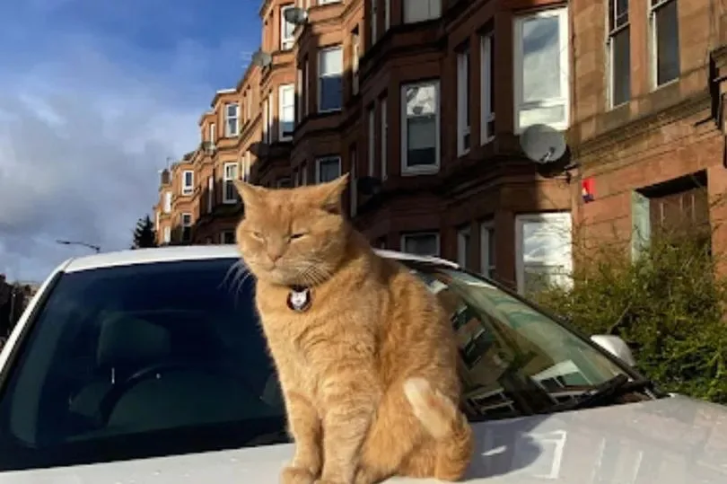

- Drop In – £10
- Overnight – £25
Born and raised in the West End, I'm a dedicated cat sitter who's always had cats of my own. Currently studying at university, my parents usually trusted me to look after their cat. One day I wasn't there and there was no one to sit with the cat – all their friends didn't have cats, and the ones who did weren't available. They had to hire someone to catsit.
Although I was a good cat sitter – immediately friendly and easy to reach – it wasn't free, but it was better service than having someone who doesn't really like cats looking after them. I was uncertain about being a catsitter at first. I knew I was good at cat sitting, but I didn't know how well I could talk to customers, and setting up my own little business on the side was not something I'd done before.
Full disclosure: I only sit cats and I have nothing against dogs – it's just that I'm more comfortable sitting cats, sorry! I'm really glad I set up this business and became a catsitter. It changed me – it allowed me to be confident in setting up other part-time businesses, and I realised how confident I was as I met new people here in the West End.
